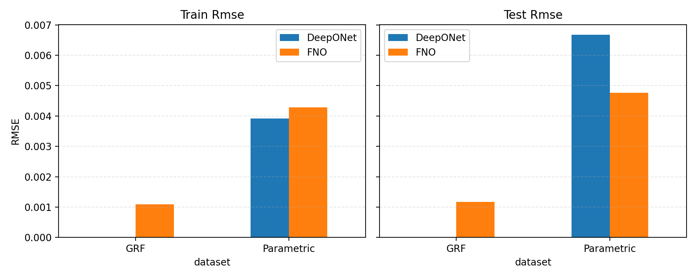

Neural Operators for 1D Committor Learning
This project studies neural operators for the one-dimensional committor equation. The core goal is to learn the mapping from a potential function to the corresponding committor, not just for a single PDE instance but as an operator over a family of related problems. I benchmark two architectures, DeepONet and Fourier Neural Operator (FNO), and compare how their design choices affect generalization, boundary behavior, and error on unseen potentials.
Main role: design and benchmark operator-learning pipelines for a 1D committor problem, showing that a refined DeepONet reduces test RMSE to \(6.68\times10^{-3}\) on the parametric family, while FNO further improves to \(4.77\times10^{-3}\) on the same task and \(1.17\times10^{-3}\) on the Gaussian-random-field dataset.
Problem Definition
The committor is defined on the interval \([-1,1]\) as the solution of
\[ q''(x)-\beta V'(x)q'(x)=0, \qquad q(-1)=0,\; q(1)=1, \qquad \beta=1. \]
Given a potential \(V(x)\), the task is to learn the operator that returns the corresponding committor \(q(x)\). Ground truth throughout this project is generated with the Chebyshev spectral solver in Committor1D_helpers.py, so every learned model is benchmarked against a reliable numerical reference rather than self-consistency alone.
Why the Models Are Combined
DeepONet and FNO are similar enough that treating them as two separate site entries weakens the story. They solve the same operator-learning problem, use related datasets, and are most informative when compared directly. Framed as one project, the result is much stronger: the page shows model selection, architectural reasoning, and benchmark-driven evaluation rather than two isolated implementations that repeat the same context.
Datasets and Experimental Framing
The project uses two data regimes:
- A structured three-parameter potential family \[ V(x)=(x^2-1)^2+p_0\exp\left(-\frac{(x-p_1)^2}{2p_2^2}\right), \] with \(p_0\in[0,5]\), \(p_1\in[-0.5,0.5]\), and \(p_2\in[0.25,0.7]\).
- A stochastic Gaussian random field ensemble used to test more general function-space behavior.
This split matters because it tests two distinct kinds of generalization. The parametric family evaluates how well the models learn a structured low-dimensional operator. The GRF family tests whether the same ideas extend to a much broader and less constrained class of potentials.
DeepONet
I began from the standard DeepONet formulation. In the original setup, 100 Gaussian random fields were discretized on 100 grid points, and each committor was queried at 100 random spatial locations, yielding 10,000 training tuples of the form
\[ [u(x_0),u(x_1),\dots,u(x_{N_x-1}),y,q(y)]. \]
This baseline fit the training distribution well but generalized poorly. The training MSE was about \(1.36\times10^{-5}\), while the test MSE on unseen GRF samples was \(3.37\times10^{-3}\). On the standard double-well potential \(V(x)=(x^2-1)^2\), the test MSE was \(7.88\times10^{-3}\). In RMSE terms, that corresponds to \(5.81\times10^{-2}\) on GRF test data and \(8.89\times10^{-2}\) on the double-well case.
That failure was useful because it identified the central problem: the model could fit the training set, but the data representation and inductive bias were not strong enough for reliable operator generalization.
Refined Parametric DeepONet
To address that, I moved to the three-parameter potential family and rebuilt the operator-learning pipeline around a more structured dataset. I sample \(N_u=120\) parameter triplets uniformly, evaluate each potential at \(N_{\mathrm{eval}}=100\) uniformly sampled query points, and generate 12,000 tuples of the form
\[ [p_0,p_1,p_2,y,q(y)]. \]
The train/test split is done by parameter triplet, not by individual tuple, so the model is evaluated on entirely unseen potentials. This is a much stronger test than simply predicting new query points on already-seen parameter settings.
The final DeepONet uses a branch-trunk decomposition
\[ q_{\theta}(y)=\sigma(\langle b,t\rangle + c), \]
with latent size \(m=64\), two-layer MLPs of width 128 for both branch and trunk, and \(\tanh\) activations. The most important refinements were:
- parameter normalization of \((p_0,p_1,p_2)\)
- Fourier features for \(y\): \([y,\sin(\pi y),\cos(\pi y),\sin(2\pi y),\cos(2\pi y),\sin(3\pi y),\cos(3\pi y)]\)
- a soft boundary penalty \(\lambda_{\mathrm{bc}}\big[(q_{\theta}(-1))^2+(q_{\theta}(1)-1)^2\big]\) with \(\lambda_{\mathrm{bc}}=10^{-2}\)
Training uses Adam with learning rate \(10^{-3}\), batch size 512, up to 300 epochs, and early stopping on test RMSE. The refined DeepONet reaches train/test RMSE \(3.92\times10^{-3}\) and \(6.68\times10^{-3}\), compared with a simpler parametric baseline of roughly \(6.10\times10^{-3}\) and \(9.75\times10^{-3}\). It also improves dramatically over the earlier GRF-based DeepONet behavior.
Boundary handling is still soft rather than exact. The reported value \(q_{\theta}(-1)\approx 0.0099\) is small but nonzero, which suggests a clear next step: replacing the sigmoid-head formulation with a hard-boundary ansatz such as \[ q_{\theta}(y)=\frac{1+y}{2}+(1-y^2)h_{\theta}(p_0,p_1,p_2,y). \]
Fourier Neural Operator
The FNO part of the project shifts from function-to-point learning to true function-to-function operator learning. Instead of predicting \(q(y)\) at individual query points, the model takes a full discretized representation of \(V'(x)\) and predicts the full discretized committor \(q(x)\). This is a better match for spectral neural operators and a more natural formulation when the output is a globally structured smooth function.
I construct separate parametric and GRF datasets with 600 samples each, all discretized on \(N_x=256\) grid points and split 80/20 into train and test potentials. For the parametric dataset, the input channels concatenate the raw derivative \(V'(x)\), a normalized copy, the spatial coordinate, and per-sample mean and standard deviation channels. For the GRF dataset, I keep the raw derivative, coordinate, and mean/std channels but omit the z-scored copy to avoid suppressing stochastic amplitude information.
The FNO uses width 96, 48 Fourier modes, and 4 Fourier layers. Each spectral block performs \[ \mathcal{F}^{-1}\big(R_{\mathrm{modes}}\cdot\mathcal{F}(x)\big), \] where \(\mathcal{F}\) is the Fourier transform and \(R_{\mathrm{modes}}\) is a learned low-mode transformation. Pointwise convolutions complement the spectral blocks, GELU activations are used, and a sigmoid head keeps outputs in \([0,1]\).
Training uses Adam with learning rate \(10^{-3}\), weight decay \(10^{-6}\), a maximum of 350 epochs, early stopping, and the same soft boundary penalty coefficient \(\lambda_{\mathrm{bc}}=10^{-2}\). The final FNO results are:
- Parametric dataset: train RMSE \(4.29\times10^{-3}\), test RMSE \(4.77\times10^{-3}\)
- GRF dataset: train RMSE \(1.09\times10^{-3}\), test RMSE \(1.17\times10^{-3}\)
These are especially strong because the train-test gap remains small and the stochastic GRF operator is handled much better than the earlier DeepONet baseline.
Comparison
| Model | Dataset | Train RMSE | Test RMSE |
|---|---|---|---|
| DeepONet | Parametric | \(3.92\times10^{-3}\) | \(6.68\times10^{-3}\) |
| FNO | Parametric | \(4.29\times10^{-3}\) | \(4.77\times10^{-3}\) |
| FNO | GRF | \(1.09\times10^{-3}\) | \(1.17\times10^{-3}\) |
The comparison tells a clean story. DeepONet becomes much stronger once the data representation is improved and the task is reframed as a structured parametric operator problem. But when the target is a full-function-to-full-function map with strong global structure, FNO is the better inductive bias. Its spectral layers capture long-range dependencies more naturally, and the empirical results reflect that.

Train and test RMSE comparison for the neural-operator models. The FNO achieves the lowest test error on both the shared parametric task and the GRF operator-learning task.
Takeaways
Taken together, the experiments show that both architecture choice and problem formulation matter. DeepONet becomes much more reliable once the dataset is structured around unseen parameter triplets and the inputs are normalized and enriched with Fourier features. FNO then improves further when the task is written in its more natural function-to-function form, where the global structure of the committor can be learned directly from discretized input fields.
The final conclusion is therefore comparative rather than absolute: DeepONet can perform well on the structured parametric family, but FNO is the better fit for this operator-learning problem overall. The project closes with a clear benchmark story, a defensible train-test protocol, and a concrete modeling direction for future refinement, especially around hard boundary enforcement.
Back to Projects